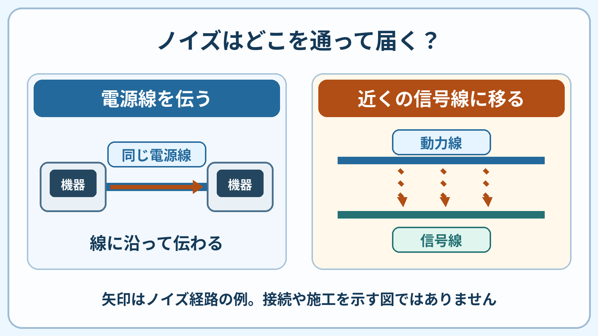
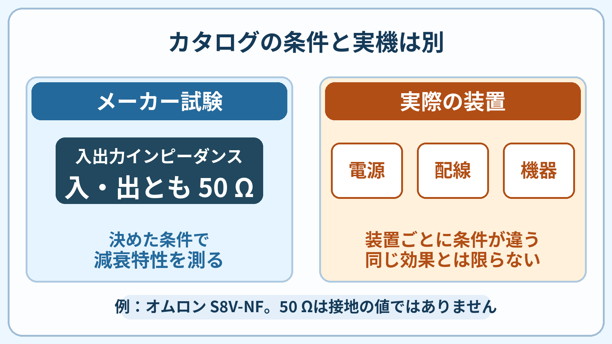
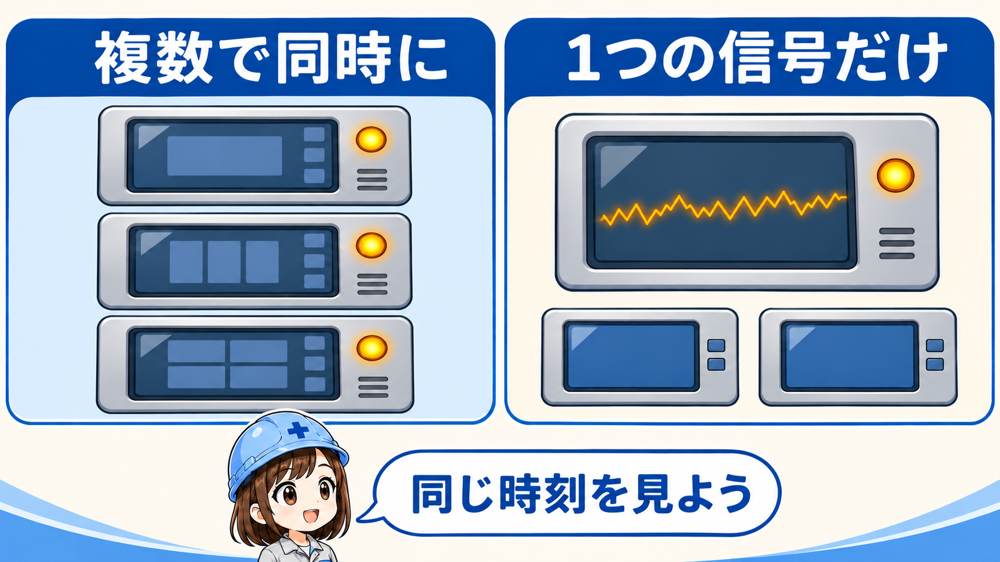

ノイズフィルタは、電源線を伝うノイズを減らす部品
最終内容更新：
例えば、コンベヤを起動するたび、別の装置でセンサ値が一瞬だけ跳ねるとします。ここでフィルタを選ぶ前に、同じ時刻に、何台が、どう変わったかを既存の履歴で確かめます。起動と症状が重なることは手がかりですが、ノイズの原因や通り道が分かったわけではありません。
このページで扱うのは電源ライン用のノイズフィルタです。電源線を伝わって機器に入る、あるいは機器から出ていく不要な成分を減らします。離れた信号線への回り込みや、瞬時の電圧低下、センサ自体の異常まで、一つのフィルタで直せるわけではありません。

後輩コンベヤの起動に合わせて値が跳ねます。フィルタを足せば直りますか？

先輩まず、その値だけか、同じ電源の機器も乱れたかを見よう。次に見る図面が変わるよ。
電源線を伝う場合と、近くの信号線に移る場合

電源線を伝う（伝導）場合は、同じ給電系統の機器へ影響が届くことがあります。近くの線へ移る（結合）場合は、別電源でも、動力線の近くを通る信号線に影響が入り得ます。いったん別の線に移れば、その先はその線を伝わります。二つを「どちらか一方だけ」と決めません。
フィルタを見かける場所には、インバータやサーボアンプの電源側、制御電源の入力側などがあります。役割は電源側と機器側が図面のどこにあるかで読み、入出力や接地の指定は機種の説明書で確かめます。一般の電源入力用をインバータのモーター側や信号側に流用できる、という意味ではありません。
発生源の候補と、影響を受けるところを分ける
インバータ・サーボアンプ・スイッチング電源、リレーや電磁弁のコイルの切換は発生源の候補です。影響としては、PLCの入力が意図せず変わる、センサが誤検出する、通信が途切れる、アナログ値がふらつく、などがあります。同じ症状はノイズ以外でも起こるので、症状名ではなく記録を使います。
| 見ている対象 | 照合する記録・資料 |
|---|---|
| インバータ・サーボ | 運転開始・停止と異常の時刻。図面上の電源側とモーター線、サーボのエンコーダ線の経路。 |
| アナログ入力・ロードセル・センサ | 対象チャンネル、他の信号は同時に変わったか、実際に荷重・位置などが変わった記録があるか。 |
| PLC・通信機器 | 再起動履歴、通信エラーが出た機器の範囲、共用電源や同じネットワークの範囲。 |
フィルタの有無と、カタログの減衰量を読む
電源線が主な経路なら、適合するフィルタでその経路のノイズを減らせる場合があります。ただしフィルタが付いていても、入出力側の配線が近いと、フィルタを通らない回り込みが起こり得ます。動力と信号の配線の位置関係、筐体や接地・シールドの扱いも、図面と機器の資料で確認します。

オムロンのS8V-NFには、単相AC250 V（50/60 Hz）またはDC250 Vの3 A／6 A形があります。減衰は周波数や、線間に現れるノーマルモードか、複数の線が接地側などに対して同じ向きに変動するコモンモードかで違います。表やグラフにある減衰量が、そのまま実機で得られるとは限りません。
交換・追加を検討する段階では、定格だけでなく、使う周波数や減衰特性、温度による電流の制限、漏洩電流と保護機器との整合も、設備担当者が対象の型式別資料で確認します。対策の前後に既存記録が残っていれば、同じ負荷・同じ動作条件で症状を比べます。確認のための再現運転や、保護を外す比較は行いません。
同じ時刻に複数か、一つの信号だけか

| 既存の時刻・表示から見えたこと | 次に見ること |
|---|---|
| 同じ電源系統の機器が複数、同じ時点で乱れる | 共通する給電経路と電源警報・再起動履歴。伝導ノイズだけでなく、始動時の電圧低下なども候補にする。 |
| ほかは普段どおりで、一つの信号だけ乱れる | センサや入力の対象と実際の変化、図面・配線記録の並走箇所、シールドの設計。結合や接触の不安定さなどを候補にし、ここでも断定しない。 |
| 通信だけが一群で途切れる | 共通の通信機器、リンクや再起動の履歴、通信線と動力線の位置関係。電源の問題も残す。 |
後輩電源の記録は普段どおりで、センサ一つの値だけが乱れていました。
先輩先にその信号の経路と実際の変化を見よう。ただ、短い乱れは記録に残らないこともあるよ。
図面で確認できること、担当者に任せること
- 型式・入出力： 設備図面と型式の資料で、フィルタがどの機器の電源経路にあるかを確認します。端子を見ただけで判断しません。
- 配線と接地： 図面や保守記録で、入出力側の近接、動力線と信号線の並走、筐体と接地の関係、接地線が長い・接続不良だった記録、シールドの指定を確認します。離隔寸法やシールドの接地方法は一律ではありません。
- 記録が足りないとき： 既設の表示・履歴で分かった範囲と分からないことを伝えます。記録がないことだけで電源や配線を候補から外しません。
接地や保護を外して試さない
盤を開ける、通電したまま測る、配線やフィルタを変更する、保護接地・シールドを外すことは、この切り分けでは行いません。測定や修正が必要なら、設備の手順に従える担当者へ引き継ぎます。
メーカー公式資料
公式資料確認：。製品選定・使用条件は対象型式の最新資料と設備手順を優先してください。
- オムロン「S8V-NF 定格／性能」：定格、モードと周波数、温度、漏洩電流、入出力50 Ωでの減衰測定条件。
- 三菱電機「ノイズの種類と伝播経路」：電源線、近くの信号線への誘導、空間経由の考え方。
- TDK「入出力の配線はどのようにしたらよいですか？」：入力側と出力側の近接で起こる回り込み。
- オムロン「パワーサプライ 参考資料」：電源の入出力とノイズ誘導を分けて考える資料。
まとめ：部品を選ぶ前に、通り道の手がかりを集める
ノイズフィルタは電源線を伝うノイズを減らす手段です。まず時刻・範囲・共用の電源を比べ、信号への回り込みや電圧の変化も候補にします。導入を検討する場合は、定格・測定条件・配線と接地を機種資料で照合し、記録の範囲を超える試験は担当者へ引き継ぎます。
ノイズ対策を全体から切り分けたいとき
この項目だけで原因を決めず、制御盤のノイズ対策・誤動作の切り分けガイドで、発生源・伝搬経路・影響を受ける機器の順に整理できます。